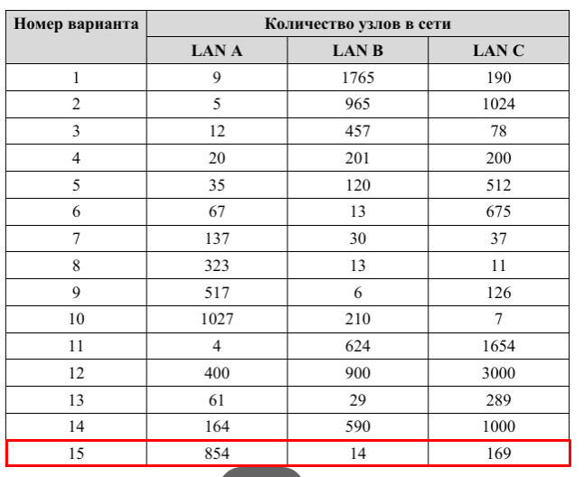
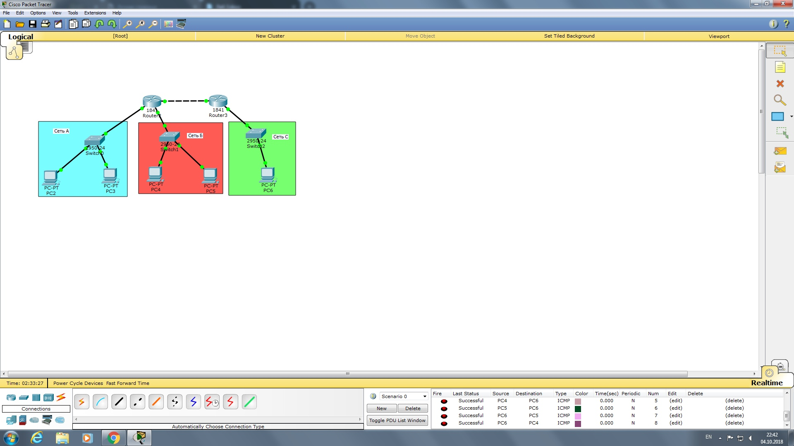
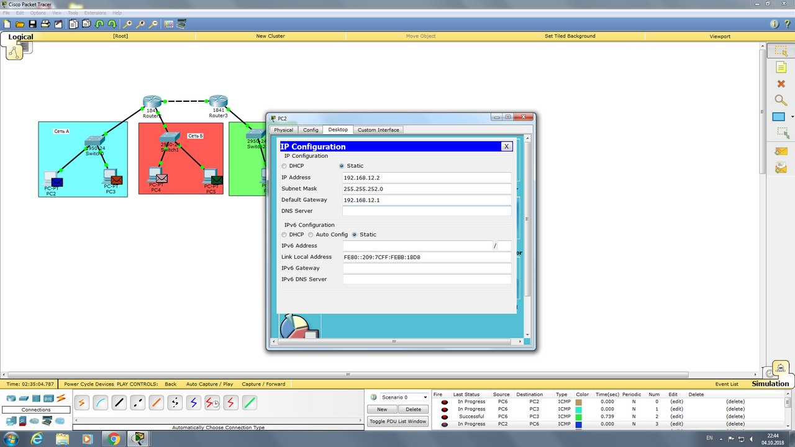
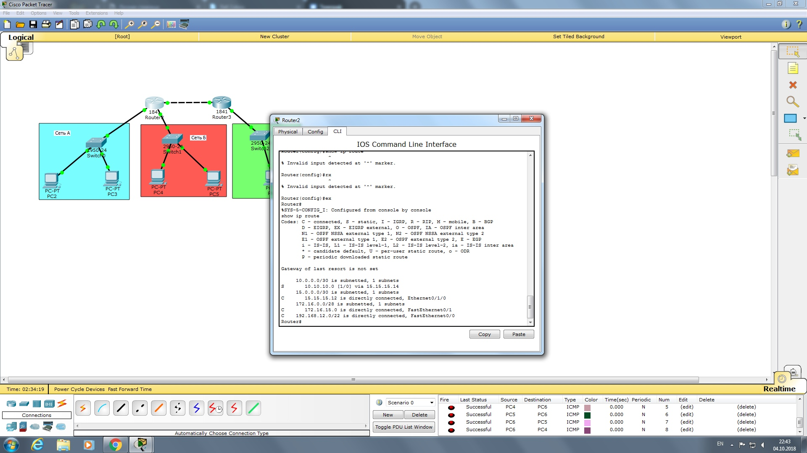

Лабораторная работа №3: Лабораторная работа №3 «Настройка локальной сети передачи данных»: Настройка коммутаторов и маршрутизаторов
Целью данной лабораторной работы является настройка сети. В соотвестствии с вариантом  были выбраны следующие пулы ip-адресов:
- 192.168.12.1 - 192.168.15.254
subnet: 192.168.12.0
broadcast: 192.168.15.255
mask: 255.255.252.0 - 172.16.15.1 - 172.16.15.14
subnet: 172.16.15.0
broadcast: 172.16.15.15
mask: 255.255.255.239 - 15.15.15.1 - 15.15.15.254
subnet:15.15.15.0
broadcast: 15.15.15.255
mask: 255.255.255.0
В процессе выполнения лабораторной работы было реализовано:
- Создание сети;
 - настройка узлов и маршрутизаторов; 
- настроена статическая маршрутизация. 